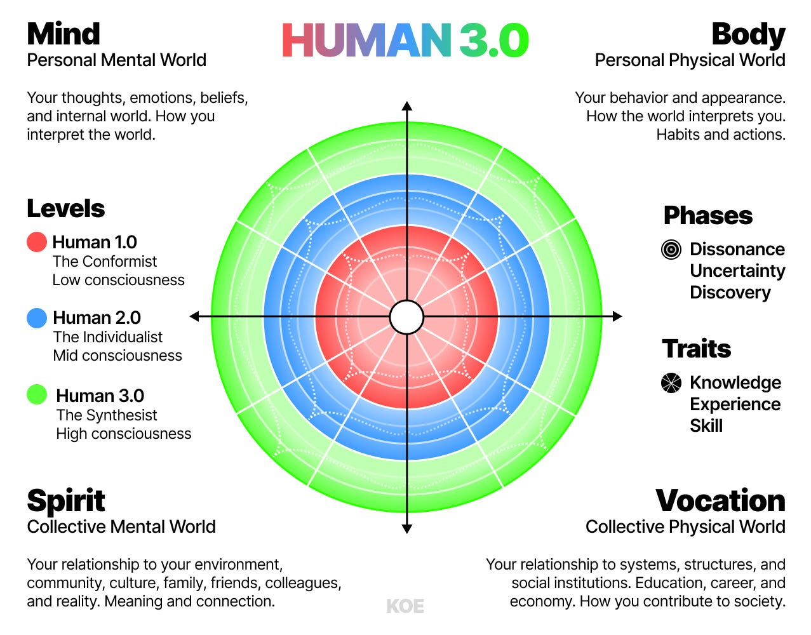

认知、情绪、信念、自我意识。
用 Human 3.0 看清你现在的位置，再决定下一步怎么走。
这不是心理诊断，也不是人格标签。它用四个象限、三个层级和行动复盘， 帮你看清当前约束，并把答案转成一段可以继续追问 AI 的提示词。
健康、睡眠、运动、精力。
意义、关系、家庭、方向。
工作、收入、技能、系统。
你的 Human 3.0 初步报告
报告在你的浏览器本地生成。你可以复制、下载，或继续交给自己的 AI 追问。
方法论
先理解模型，再做测试，最后把结果变成一个最小行动。
内容层 1
Human 3.0 是什么
Human 3.0 用四个象限看人的发展：心智、身体、精神、事业。 每个象限都有 Level 1.0、2.0、3.0 三个层级，以及 Dissonance、Uncertainty、Discovery 三个阶段。
- Level 1.0：依赖外部权威和规则，按剧本生活。
- Level 2.0：建立个人目标，追求成就、能力和差异化。
- Level 3.0：整合多重观点，创造系统，重视贡献和长期复利。
内容层 2
原文逻辑与可信度
Human 3.0 不是一个凭空出现的人格测验。它把几套已经长期影响心理学、 哲学和成长研究的方法放到同一张地图里，再回答一个现实问题： 一个人如何在不同人生领域里，持续解决更复杂的问题。

- 四象限结构：受到 Ken Wilber 的 AQAL 模型影响， 用心智、身体、精神、事业四个视角，避免只从一个维度解释人生。
- 发展层级：参考 Spiral Dynamics、Loevinger 和 Cook-Greuter 的自我发展阶段研究，用 Conformist、Individualist、 Synthesist 描述不同的意义结构和行动方式。
- 心流与成长：结合 Csikszentmihalyi 的心流研究， 把成长看成挑战、能力和反馈之间的动态循环，而不是空泛的自我激励。
- 问题解决路径：先识别主要约束，再应用最小有效剂量， 观察一个象限的改变如何影响其他象限。
- 阶段与特质：Dissonance、Uncertainty、Discovery 描述转变过程；Knowledge、Experience、Skill 描述实际能力的形成。
它不是临床诊断，也不能替代医生、心理咨询或专业评估。它的价值在于提供一套 可讨论、可验证、可行动的语言，让你的现实问题不再只凭感觉判断。
内容层 3
四象限如何评估
评估不是给你贴标签，而是寻找可观察的行为证据。每个象限都同时看 Level 1.0、2.0、3.0 的特征，不把任何人固定在单一身份里。
象限主要观察层级判断方式
Mind 心智
认知、情绪、信念、自我意识
从依赖外部判断，到自我驱动，再到容纳多重视角
Body 身体
健康、睡眠、运动、精力、恢复
从无意识到稳定管理，再到按目标主动优化
Spirit 精神
关系、意义、家庭、社区、方向
从外部归属，到个人意义，再到贡献和连接
Vocation 事业
工作、收入、技能、系统、价值
从出售时间，到建立能力，再到系统化和创造价值
内容层 4
诊断原则
不要同时解决所有问题。先找那个一旦解决，就能带动其他象限的主要约束。
看证据
- 以实际行为和时间分配为准。
- 不只记录愿望，也记录代价。
- 寻找反复出现的模式。
找约束
- 问：解决哪一件事，其他问题会变轻。
- 问：哪个问题反复出现但没有被处理。
- 问：哪个象限正在拖累其他三个。
做验证
- 先做一个最小有效动作。
- 用一个可观察指标判断是否有效。
- 根据结果调整，而不是靠情绪改方向。
内容层 5
四象限如何协同
一个象限的变化会影响其他象限。真正有效的人生规划，不是把四个领域平均分配， 而是找到当前最关键的连接点。
清晰驱动行动
能识别情绪和信念，才能做出更稳定的选择。
身体提供能量
睡眠、运动和恢复决定其他象限能走多远。
意义维持方向
关系和价值感决定你是否愿意长期投入。
把能力转化为价值、资源、系统和更持久的影响力。
内容层 6
如何把报告变成行动
- 前 30 天 只处理一个主要约束，每天做一个最小动作，每周记录一次证据。
- 90 天 验证新行为是否有效，建立稳定节奏，调整目标和环境。
- 6 到 12 个月 把有效做法系统化，让健康、关系、工作和意义互相支撑。
- 1 到 3 年 形成长期方向、持续贡献和更稳定的生活结构。
内容层 7
如何每周复盘
- 本周哪个象限出现了最明显的变化。
- 有什么行为证据，而不只是感觉。
- 主要约束是否发生了变化。
- 我这周最明显回避了什么。
- 下周最小有效动作是什么。
- 我需要什么支持或环境调整。
来源与资源
原文和文件
本页只保存摘要和行动翻译。完整原文请看 Dan Koe 官方文章。